ТайСабай · Контент-завод
Контент-завод: инструкция
От первой темы до выхода ролика: что нажимать и что вы увидите.
Что работает в ТайСабай уже сейчас
Монтаж, правки и чат уже работают. Публикации на площадки пока выкладывает Claude после вашего «Берём». План через Хью, съёмка, постинг по расписанию и статистика показаны так, как они устроены; в ТайСабай они заработают после того, как владелец подключит площадки и утвердит план — об этом сообщим отдельно.
На снимках — учебные примеры
Красные цифры и рамки на снимках показывают, куда нажимать. В самом кабинете их нет.
Где это. Откройте кабинет, выберите проект «ТайСабай» и найдите «Контент-завод» в меню.
Раздел 0
Как всё устроено
План → Съёмка → Монтаж → Постинг → Статистика
- Вы, редактор: готовите темы и материалы, проверяете ролик, пишете правки и выбираете «Берём» для подходящей версии.
- Владелец: подключает площадки, согласовывает план и публикации; его действия ниже помечены «Делает владелец».
- Claude: отвечает на вопросы в общем чате компании и пока выкладывает публикации после вашего «Берём».
В «Контент-плане» вы готовите темы и дни работы. Точная дата и час выхода ролика задаются отдельно — в карточке публикации в «Постинге».
Раздел 1
Подключения
Владелец настраивает площадки перед началом работы. Ссылка на аккаунт и надпись «Настроено, данных нет» сами по себе ещё не подтверждают возможность выпуска ролика.
Откройте «Подключения»
Выберите «Подключения» в меню Контент-завода. Увидите карточки площадок и их состояние: подключено, частично или не подключено.
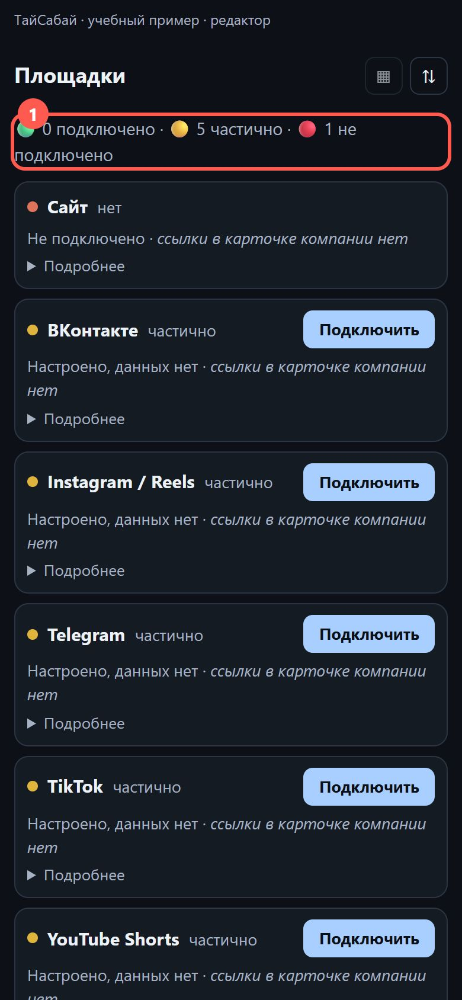
Узнайте, чего не хватает
Нажмите «Подробнее» у нужной площадки. В карточке раскроются причина текущего состояния и подсказка, что нужно сделать.
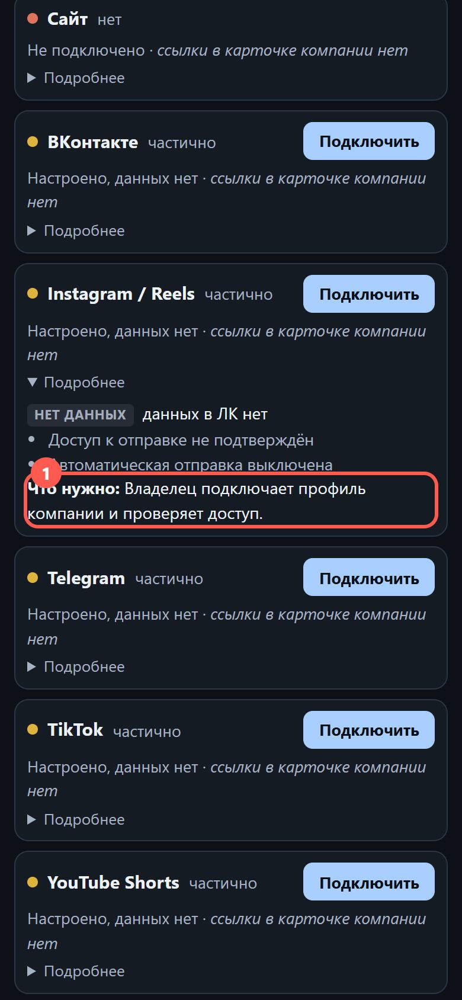
Перейдите к подключению площадки
Нажмите «Подключить» у нужной площадки и выполните подсказки открывшейся настройки. После подключения владелец проверяет доступ к нужному аккаунту и возможность выпуска роликов.
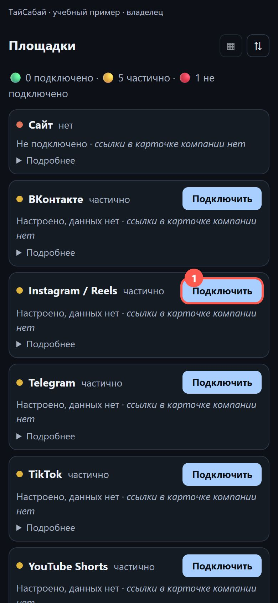
Раздел 2
Контент-план
Здесь вы собираете темы, сценарии и тексты для площадок; Хью помогает предложить темы по анкете. Можно начать через Хью или добавить уже готовую таблицу.
Начните новый план
Откройте «Контент-план» и нажмите «+ Новый». Появится анкета для будущего плана.
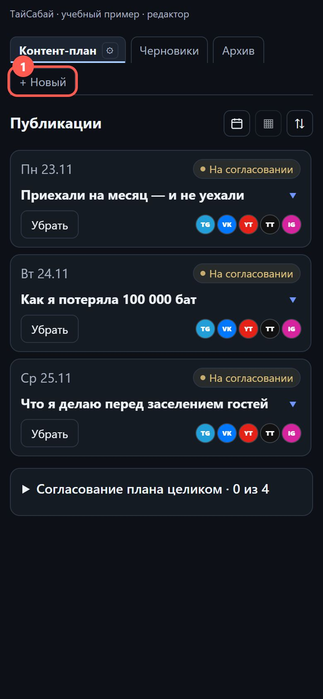
Расскажите о проекте
Заполните цели, аудиторию, тон, рубрики, частоту публикаций, кто будет в кадре и ограничения. В заголовке увидите, сколько полей уже заполнено.
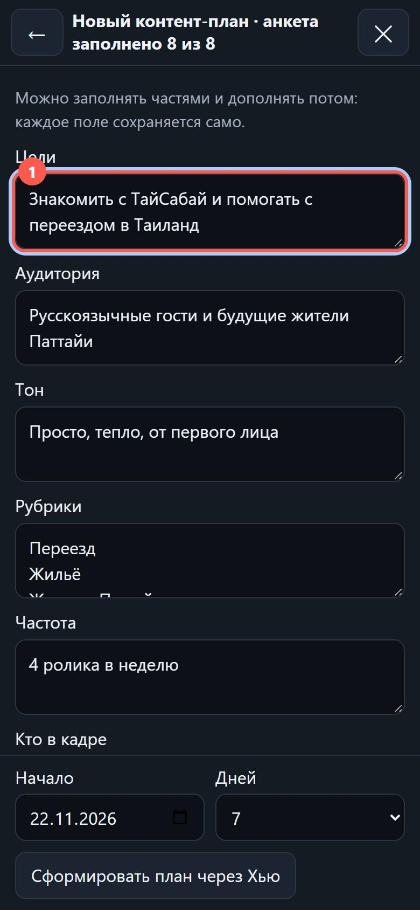
Выберите площадки для плана
Отметьте площадки, для которых нужны темы, и дождитесь надписи «Сохранено». Анкета сохраняется сама; выбор площадки здесь ещё не подключает её аккаунт.
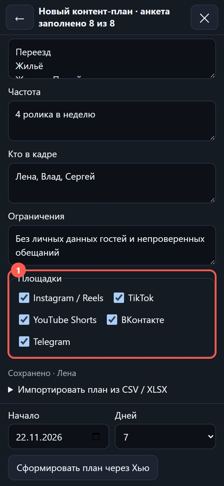
Попросите Хью предложить темы
Укажите дату начала и выберите 7 или 14 дней, затем нажмите «Сформировать план через Хью». Под анкетой появится список предложений.
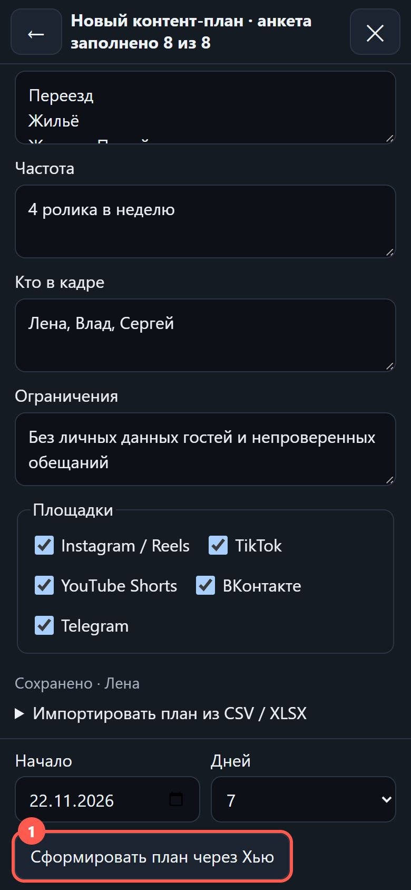
Добавьте предложения в план
Прочитайте темы и нажмите кнопку «Добавить … в план» под списком. Эти темы появятся в «Контент-плане».
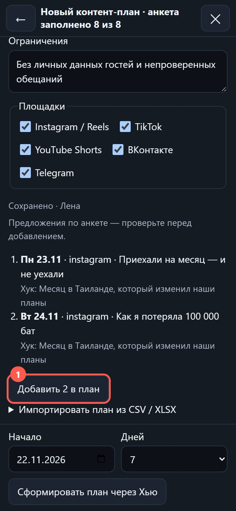
Другой способ: загрузите готовую таблицу
Если план уже готов, вместо создания через Хью раскройте «Импортировать план из CSV / XLSX» и выберите файл таблицы. В предпросмотре укажите, что находится в каждом столбце, проверьте строки и нажмите «Добавить в план».
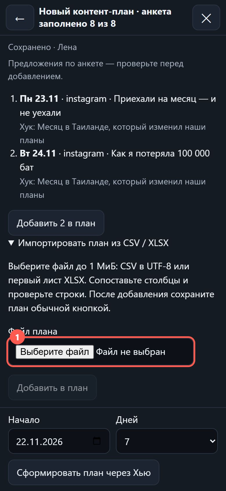
Сохраните ссылку на общую таблицу
Нажмите «Указать таблицу». Откроются «Настройки → Контент»: сохраните там ссылку для команды, а сами темы добавьте через Хью или из файла.
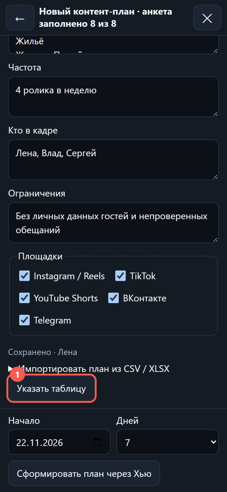
Прочитайте сценарий темы
Нажмите название темы в плане. Развернутся сценарий по сценам, реплики и сведения о подготовке ролика.
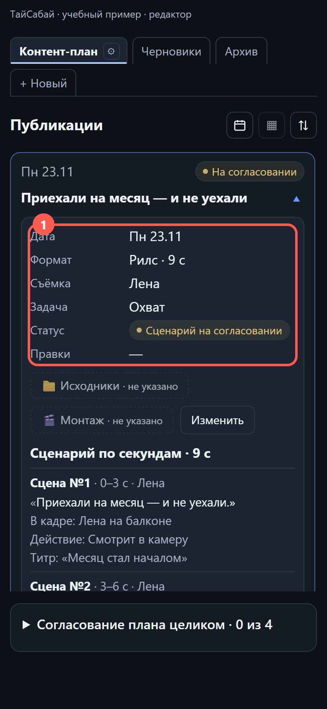
Исправьте сценарий, если нужно
Раскройте «Изменить сценарий», отредактируйте реплики и сохраните изменения кнопкой в форме. Обновлённую тему снова передайте владельцу на согласование.
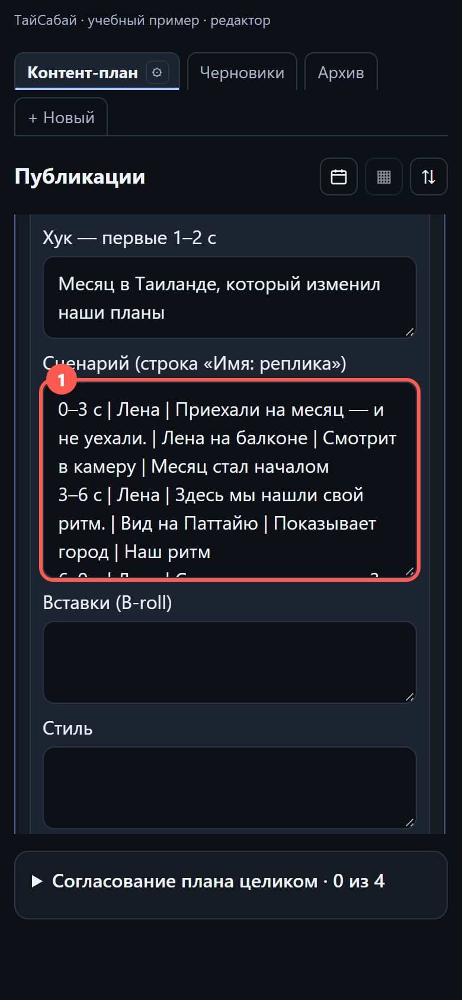
Проверьте тексты для площадок
В раскрытой теме найдите «Текст публикации» и выберите площадку. Увидите подпись, подготовленную именно для неё.
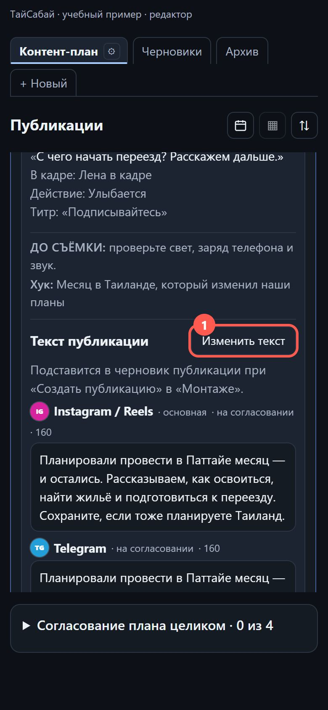
Поправьте подпись
Нажмите «Изменить текст», внесите правки и нажмите «Сохранить текст». Изменённую подпись нужно согласовать заново.
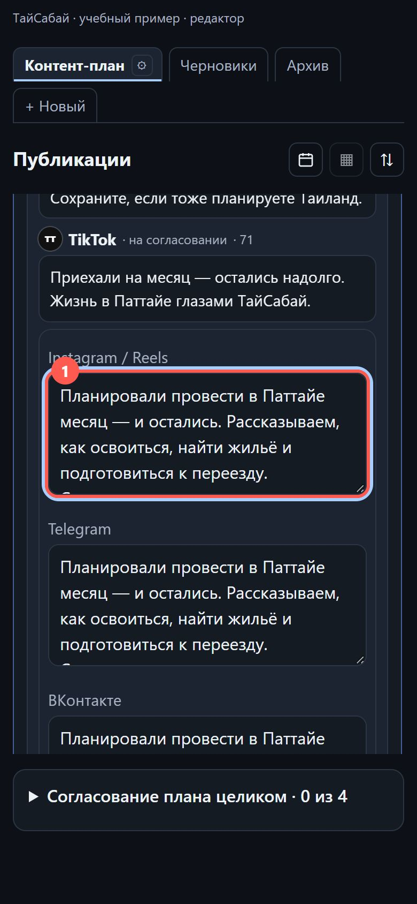
Согласуйте тему или верните её на правку
Нажмите «Сменить статус» под темой и выберите «Согласовано» или «Внести правки». У темы появится новое состояние.
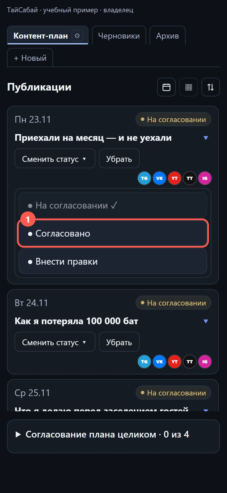
Отметьте согласование всего плана
После проверки тем раскройте «Согласование плана целиком» и поставьте свою отметку «Владелец». Когда собраны нужные согласования, одобренные видеотемы становятся доступны в «Съёмке».
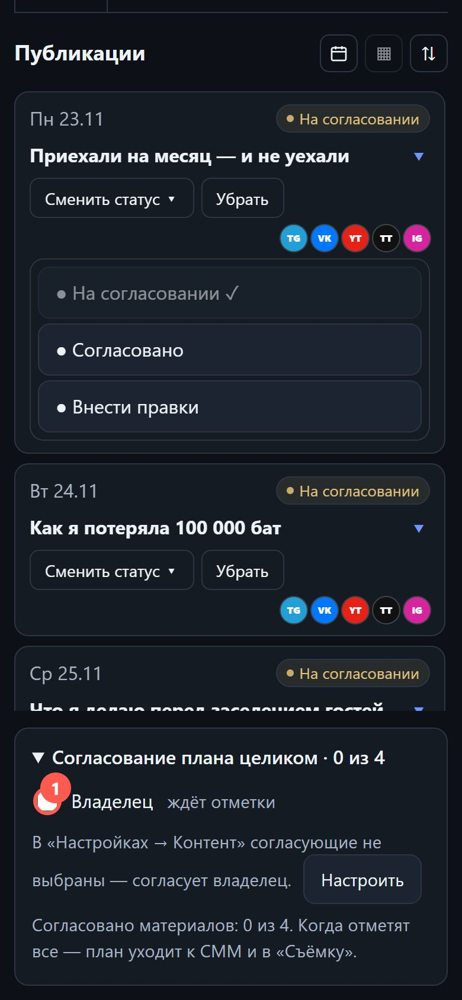
Загляните в черновики
Откройте вкладку «Черновики». Там собраны темы, которые пока хранятся как черновики, отдельно от основного списка.
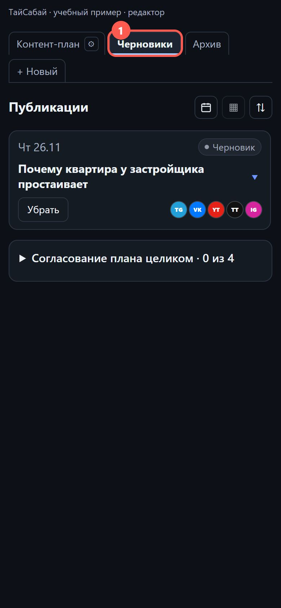
Уберите ненужную тему в архив
Нажмите «Убрать» у темы, прочитайте подтверждение и подтвердите действие. Тема перейдёт в «Архив» и больше не будет участвовать в текущем согласовании и съёмке.
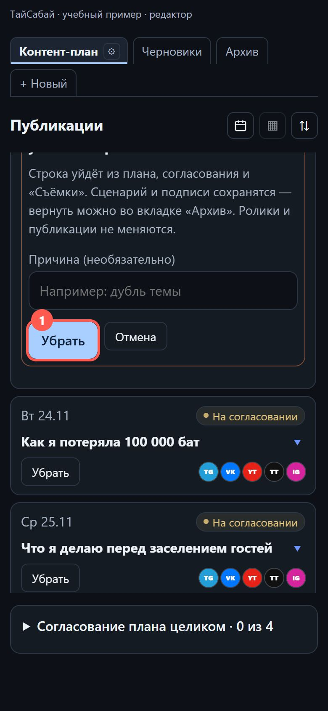
Верните тему из архива
Откройте «Архив» и нажмите «Вернуть» у нужной темы. После восстановления проверьте её место в плане и необходимость нового согласования.
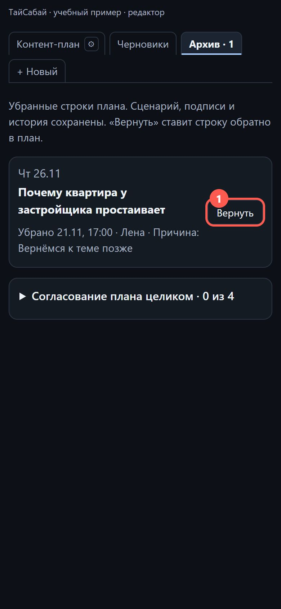
Раздел 3
Съёмка
Здесь находятся согласованные видеотемы плана. Материалы загружайте в нужную тему или сцену — так они сохранят связь со сценарием.
Если день съёмки и срок подготовки не заданы, попросите владельца заполнить их в «Настройки → Контент». Загрузка исходников ещё не означает, что новая версия ролика смонтирована.
Откройте тему для съёмки
После согласования плана откройте «Съёмку» и нажмите название нужного ролика. Развернётся его сценарий.
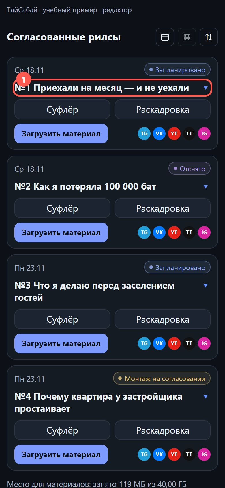
Сверьтесь со сценами и сроками
Пролистайте раскрытый сценарий: проверьте день съёмки, срок подготовки, кто в кадре и блок «До съёмки». У каждой сцены увидите реплику и описание того, что показать.
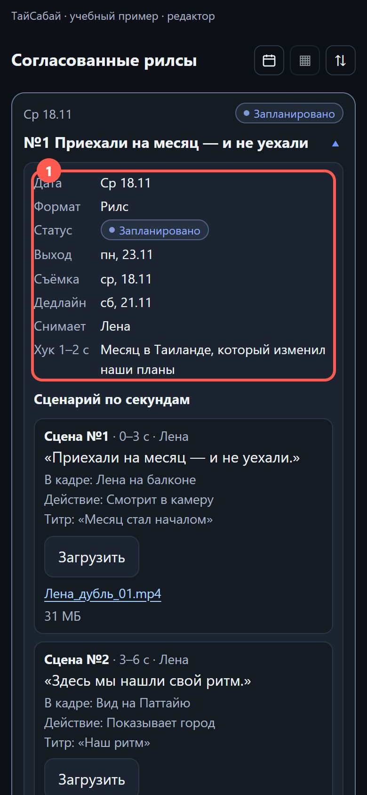
Запустите суфлёр
Нажмите «Суфлёр», затем кнопку запуска. Откроются реплики, по которым можно читать текст во время съёмки.
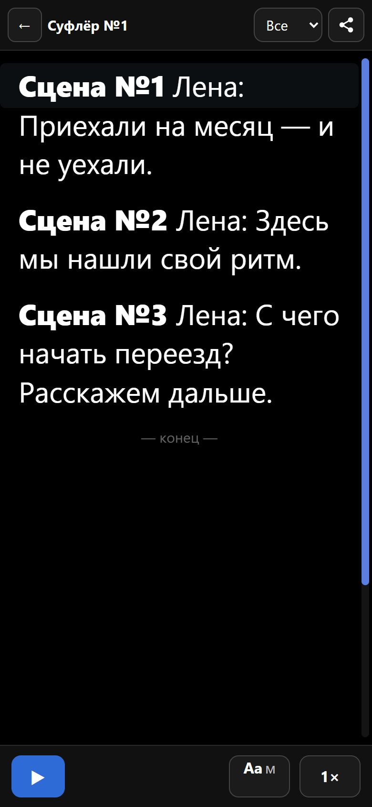
Посмотрите раскадровку
Нажмите «Раскадровка» и посмотрите, что должно попасть в каждый кадр. Кнопка «Загрузить» внутри кадра позволяет добавить дубль именно к нему.
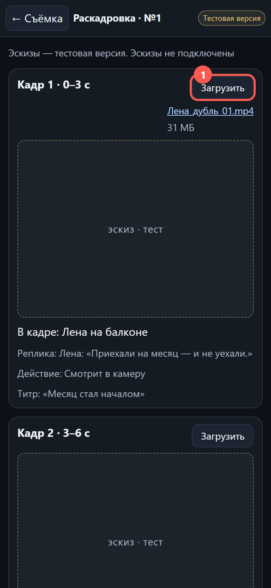
Добавьте видео к нужной теме
Чтобы добавить материал к теме целиком, нажмите «Загрузить материал» в её карточке и выберите файл. Для отдельной сцены используйте её кнопку «Загрузить».
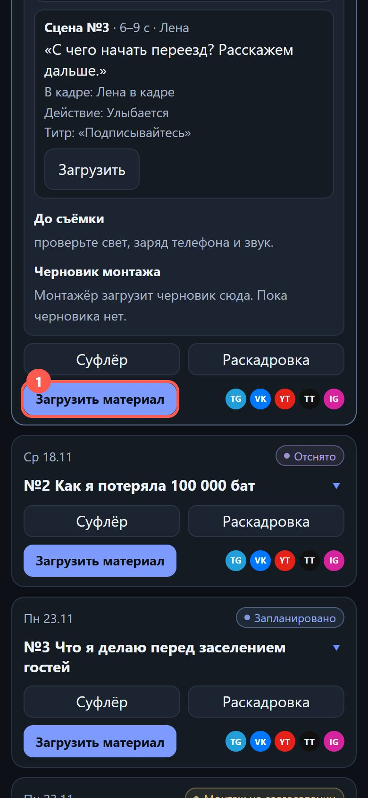
Проверьте, что файл принят
Дождитесь завершения загрузки и откройте список файлов в этой же теме. Увидите имя принятого дубля; новую версию ролика затем готовит монтажёр.
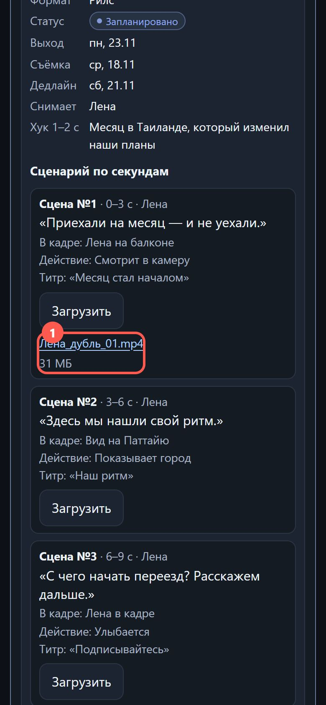
Раздел 4
Монтаж с телефона: как поправить ролик
Вы решаете, какие фразы останутся в ролике, пишете пожелания и отправляете всё монтажёру одной кнопкой. Монтировать самим ничего не нужно.
Весь путь за минуту
- Откройте ролик со статусом «Выберите фразы».
- Посмотрите его и уберите лишние фразы.
- Добавьте пожелания: шрифт, переход, громкость, музыка, врезка.
- Проверьте список «Что поменять» и нажмите «Отправить монтажёру».
- Ждите новую версию в этой же карточке.
Где это. Кабинет synapse.synapsebusiness.ru/cabinet.html → проект «ТайСабай» → в меню «Контент-завод» → «Монтаж».
Откройте ролик
На экране «Монтаж» лежат ролики со съёмки. Под названием — статус. «Выберите фразы» значит, что ролик ждёт вас.
- 1 Нажмите на ролик — откроется его карточка.
Статусы меняются так: «Выберите фразы» → «У монтажёра» → «Монтаж на согласовании».
Кнопку «Убрать» справа от названия не трогайте: она убирает весь ролик в архив, а не фразу.

Посмотрите ролик
Сверху закреплён плеер, он остаётся на месте, пока вы листаете фразы.
- 1 «Смотреть» проигрывает ролик так, как он получится: убранные фразы пропускаются. «С начала» возвращает к первой секунде.
- 2 Ниже — список «Фразы»: весь ролик, разбитый на реплики.
Строка «В ролике 20 из 30 фраз» показывает, сколько фраз сейчас оставлено.

Уберите лишние фразы
У каждой фразы справа две кнопки.
- 1 «−» убирает фразу из ролика. У убранной фразы кнопка меняется на «+» — он возвращает её обратно.
- 2 Динамик выключает звук у этой фразы: картинка останется, голоса не будет. Нажмите ещё раз — звук вернётся.
Зелёная полоска слева — фраза в ролике. Серая строка — фраза убрана. Паузы и куски без слов убраны заранее, их можно вернуть тем же «+».
Само видео при этом не режется и не портится. Это только пометки — любую можно отменить.

Нажмите на текст фразы
Если нажать не на кнопки, а на сами слова, снизу выедет шторка этой фразы.
- 1 «Показать в плеере» — плеер перейдёт к этой фразе, даже если она убрана. Удобно, чтобы послушать и решить.
- 2 «Пожелание к этой фразе» — попросить что-то именно про неё, например сделать её громче.
Крестик в углу закрывает шторку.
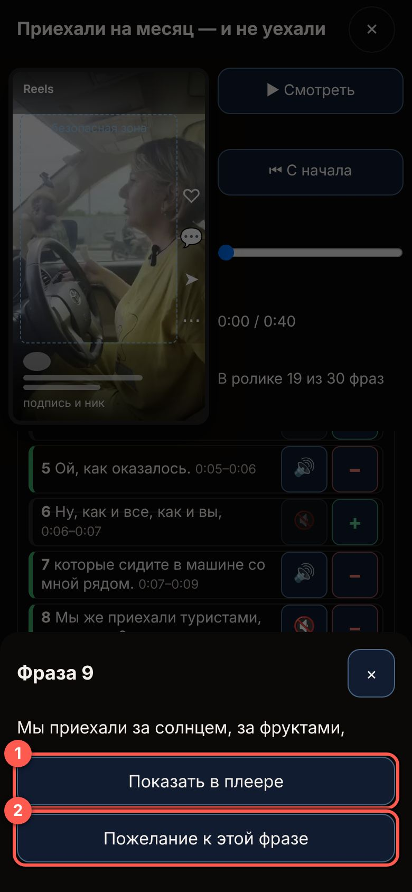
Добавьте пожелания к монтажу
Пролистайте фразы до конца — под ними шесть плиток 1. Каждая открывает шторку с готовыми вариантами и полем для пояснения.
| Плитка | Что можно попросить |
|---|---|
| Шрифт и титры | Крупнее, мельче, другой стиль, убрать титры |
| Переход | Резкая склейка, плавно, приближение — и между какими фразами |
| Громкость | Громче или тише — весь ролик или одна фраза |
| Музыка на фон | Добавить, убрать, тише, громче; можно написать, какая |
| Врезка | Показать другую картинку поверх видео, голос остаётся |
| Другое | Всё остальное своими словами |
Пожеланий может быть несколько, до двадцати на одну отправку.
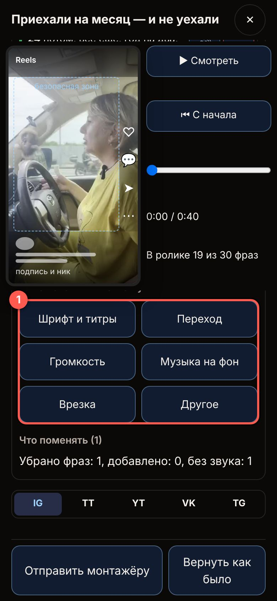
Пример: врезка поверх голоса
Нажмите плитку «Врезка». В шторке:
- «От фразы» и «До фразы» — на каком куске ролика показать врезку.
- «Что показать» — опишите словами. Сюда же можно вставить ссылку на файл или папку.
- 1 «Добавить пожелание» — оно попадёт в список, но ещё никуда не отправится.
Голос выбранных фраз остаётся на фоне — монтажёр меняет только картинку.
Остальные плитки устроены так же: выбрали вариант, при желании дописали пояснение, нажали «Добавить пожелание».

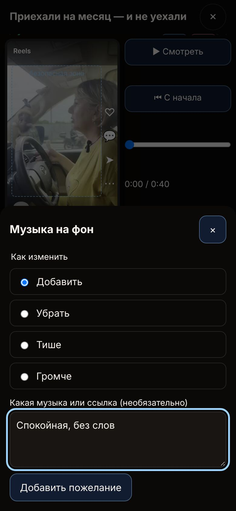
Проверьте, что уйдёт монтажёру
Под плитками собирается список «Что поменять» 1. В нём одной строкой написано, сколько фраз убрано и где выключен звук, а ниже — каждое пожелание.
- 2 Крестик справа снимает пожелание, если передумали.
Прочитайте список целиком: монтажёр получит ровно это.
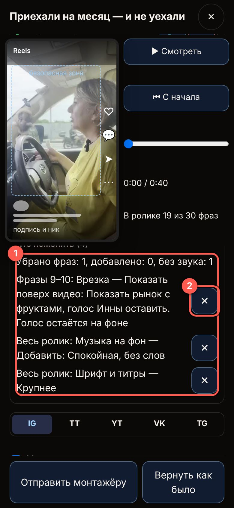
Отправьте одной кнопкой
Внизу экрана всегда видны две кнопки.
- 1 «Отправить монтажёру» — отправляет сразу и фразы, и все пожелания. Кнопка серая, пока вы ничего не изменили.
- 2 «Вернуть как было» — сбрасывает всё, что вы наменяли и ещё не отправили.
Отправка ничего не публикует в соцсети. Ролик уходит только монтажёру.
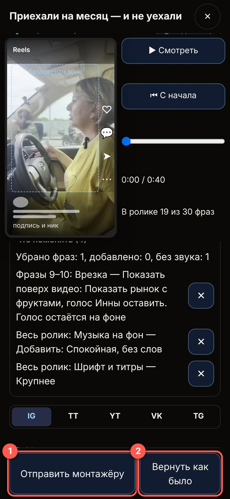
Что будет дальше
Внизу появится строка «Отправлено монтажёру…» с датой и временем 1. Статус ролика сменится на «У монтажёра».
В блоке «Просьбы по этому ролику» видна ваша правка: что вы просили и её состояние — «принято», потом «в работе», потом «готово, посмотрите». Ответ монтажёра появится там же.
- Пока правка у монтажёра, менять фразы нельзя.
- Если ошиблись и кнопка «Отменить просьбу» доступна, нажмите её и подтвердите отмену — подробнее ниже.
Новая версия появляется не сразу, срок на экране не показывается. Обновлять страницу каждую минуту не нужно.
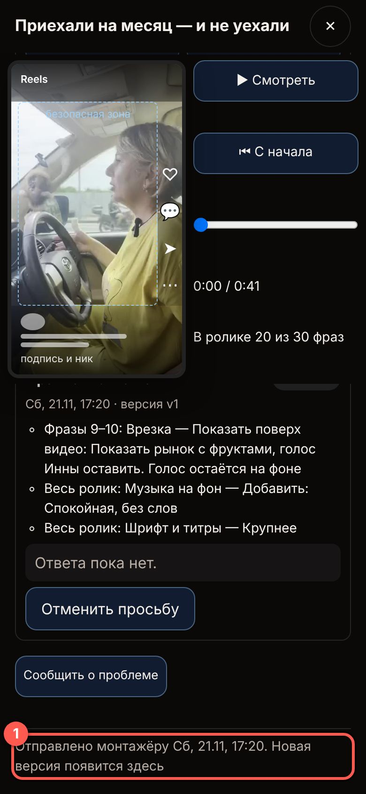

Сверьте изменения в отправленной просьбе
Откройте «Просьбы по этому ролику» и найдите свою просьбу. Строки «Возвращено фраз» и «Убрано фраз» показывают, что изменилось именно в ней, а не сколько всего фраз осталось в ролике.
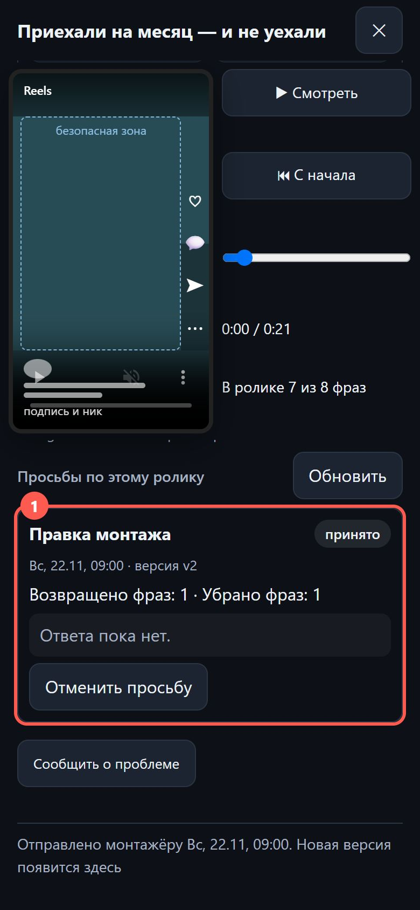
Подтвердите отмену, если ошиблись
Если у просьбы есть кнопка «Отменить просьбу», нажмите её и выберите «Да, отменить». Чтобы сохранить просьбу, нажмите «Оставить просьбу».
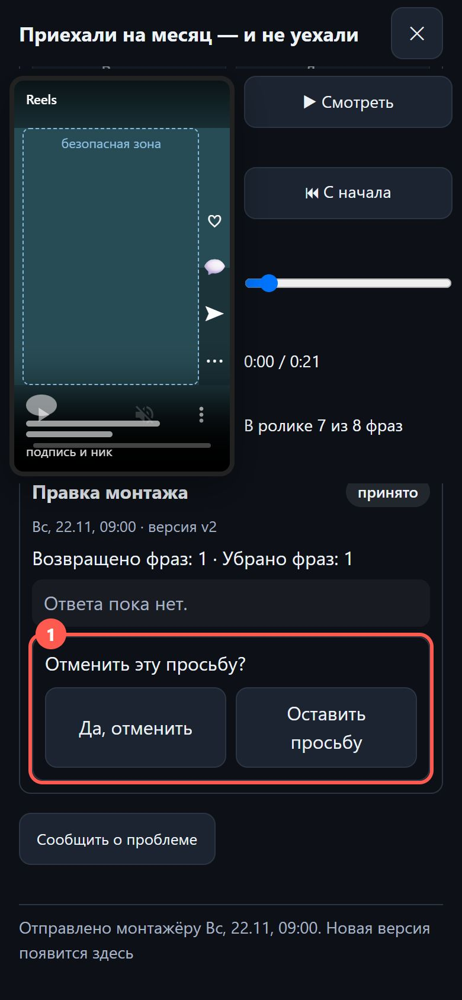
Откройте ответ и новую версию
Если рядом с «Монтажом» появилась цифра, откройте раздел и ролик с отметкой «Новая версия» или «Новый ответ». В карточке прочитайте ответ на свою просьбу и выберите новую версию, чтобы посмотреть результат.
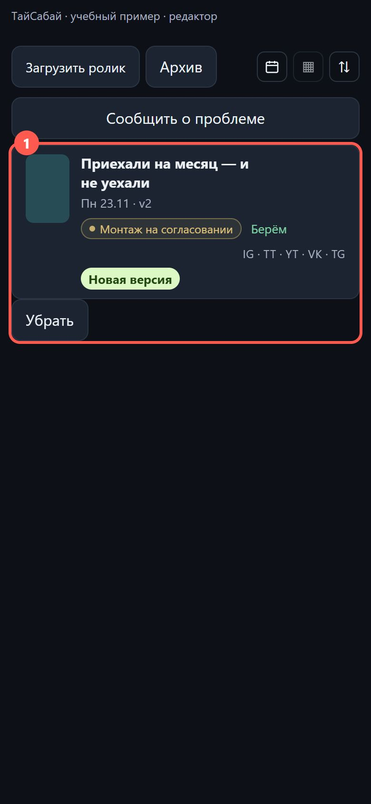
Раздел 5
Постинг: от «Берём» до выхода
Ниже — путь выпуска по расписанию после подключения площадок. Согласование темы в контент-плане и решение «Берём» не заменяют согласование конкретной публикации.
Главное расписание для выхода ролика — дата и час в его карточке публикации. «Настройки модуля» задают режим и общие пожелания; кнопка «Поставить в план» добавляет конкретную карточку в очередь.
Выберите «Берём» для готовой версии
В «Монтаже» выберите готовую версию, раскройте «Публикация и решение», отметьте «Берём» и нажмите «Сохранить». Решение появится в карточке ролика.
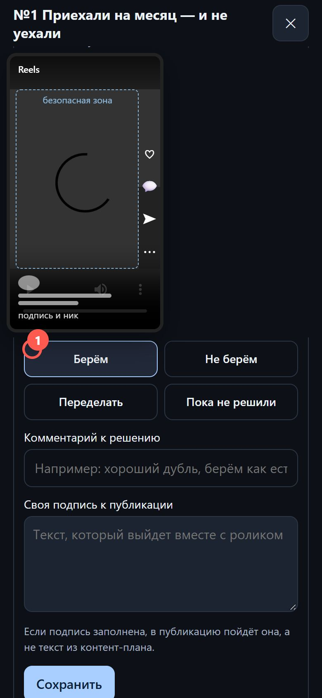
Создайте публикацию из ролика
В этом же блоке отметьте площадки и нажмите «Создать публикацию». Появится отдельный черновик с выбранным видео; нажмите «Открыть в „Постинге“».
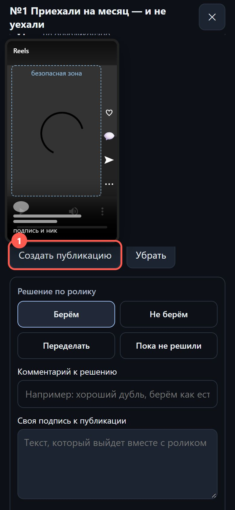
Откройте созданный черновик
В ленте «Постинга» нажмите название черновика или «Открыть публикацию». Откроется редактор, а под карточкой будет видно, чего ещё не хватает для выпуска.
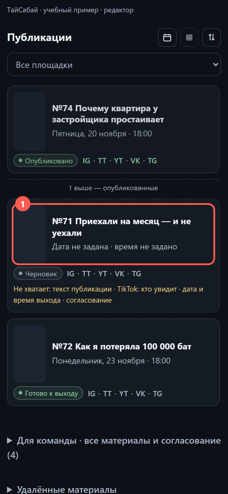
Проверьте название
Посмотрите первое поле редактора и при необходимости исправьте название ролика. Для коротких видео YouTube это название используется в заголовке.
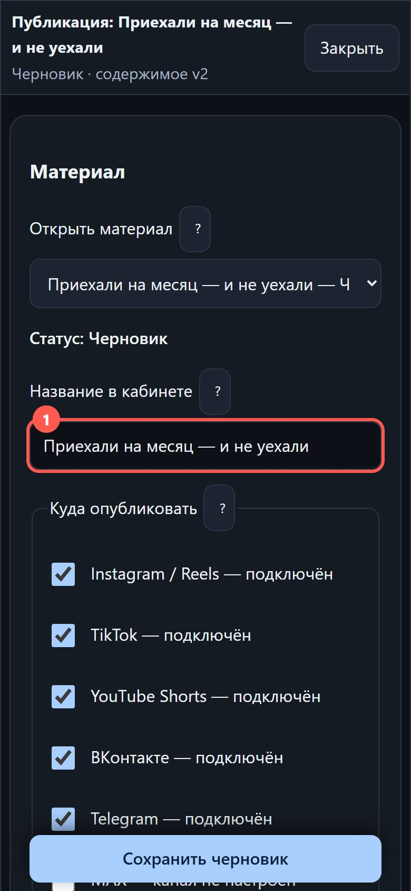
Назначьте дату и час выхода
Укажите нужную дату и время. Проверьте часовой пояс проекта — он указан рядом с полем времени.
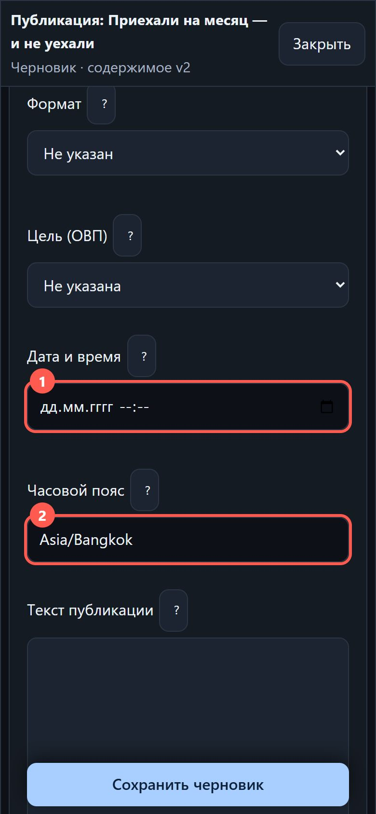
Напишите общую подпись
Введите текст, который должен выйти вместе с видео. Он будет общей подписью для площадок без своего отдельного текста.
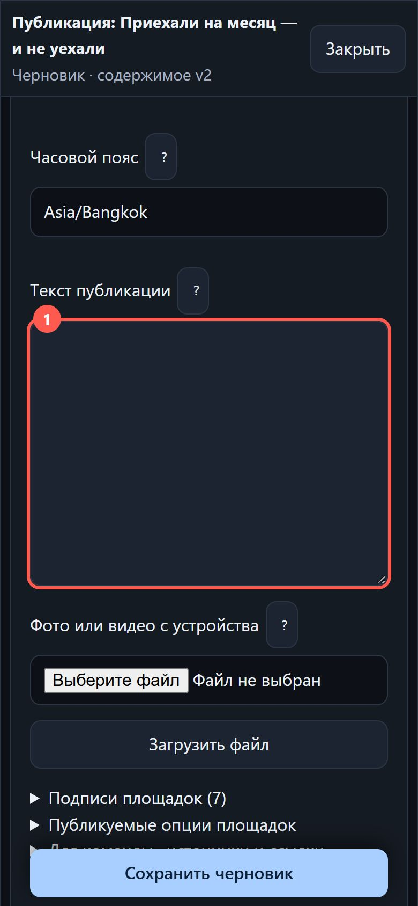
Добавьте отдельные подписи, если нужны
Разверните блок с подписями площадок и заполните текст для нужной площадки. Он заменит общую подпись только для неё.
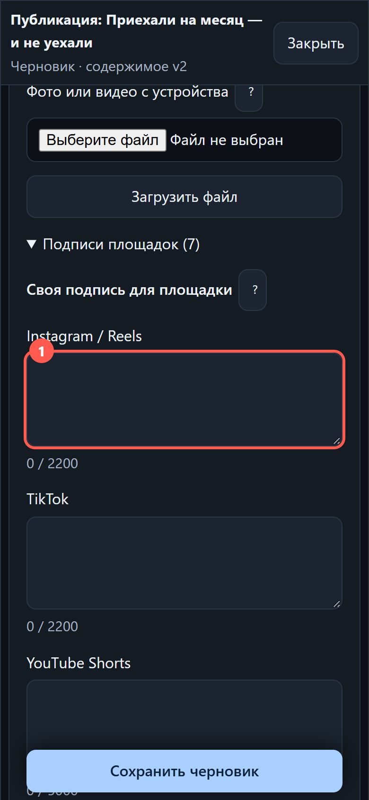
Проверьте, куда выйдет ролик
Отметьте только нужные площадки. Для каждой из них должен быть подключён подходящий аккаунт компании.
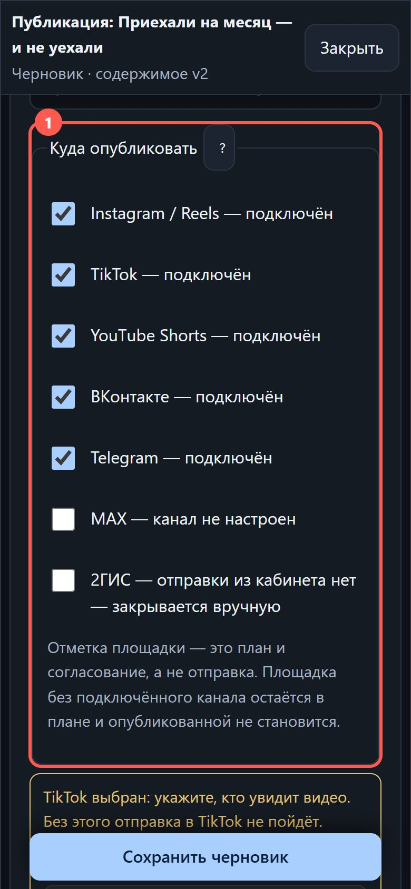
Выберите, кто увидит видео в TikTok
В поле «Кто увидит» выберите нужную видимость. Если нужен публичный выпуск, проверьте, что выбран вариант для всех зрителей.
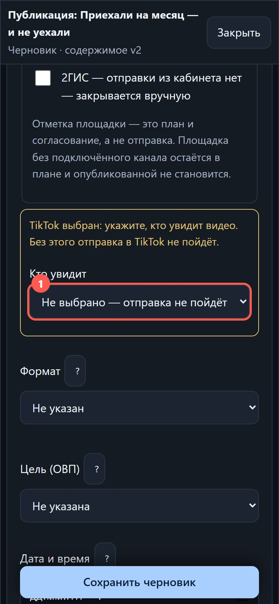
Сохраните черновик
Нажмите «Сохранить черновик». Изменения сохранятся, но публикация ещё не уйдёт на площадки.
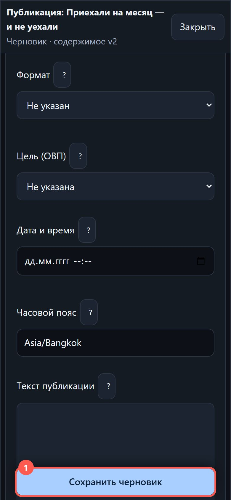
Посмотрите предпросмотр
Нажмите «Предпросмотр» и проверьте видео, подписи и площадки. Здесь же увидите замечания, если для выпуска чего-то не хватает.
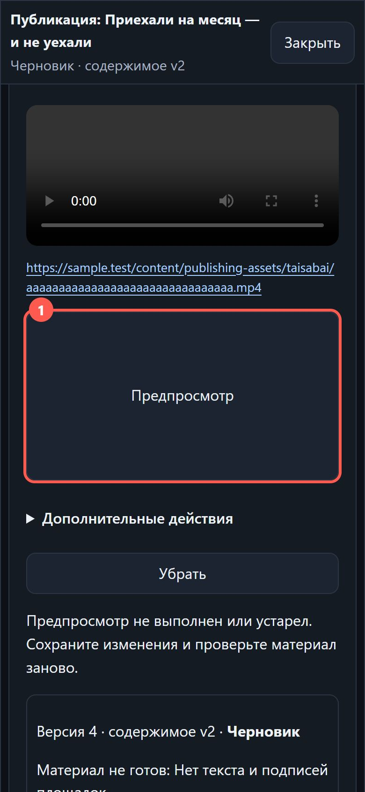
Передайте публикацию на согласование
После проверки нажмите «Отправить на согласование». Карточка будет ждать решения согласующего.
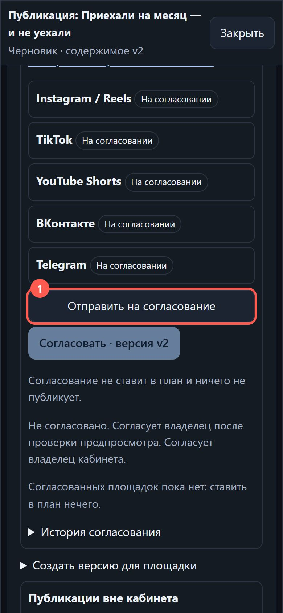
Согласуйте именно эту публикацию
Откройте подготовленную карточку и нажмите «Согласовать». Увидите подтверждение для текущего видео, текста и выбранных площадок.
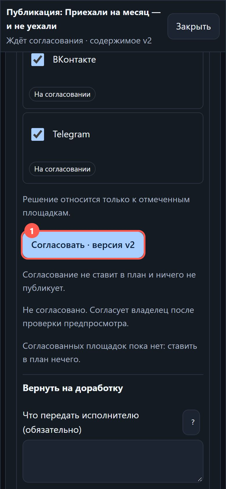
Найдите готовую карточку
Вернитесь в ленту «Постинга» и найдите ролик в блоке «Готово к выходу». Эта отметка означает готовность, но ещё не постановку в очередь.
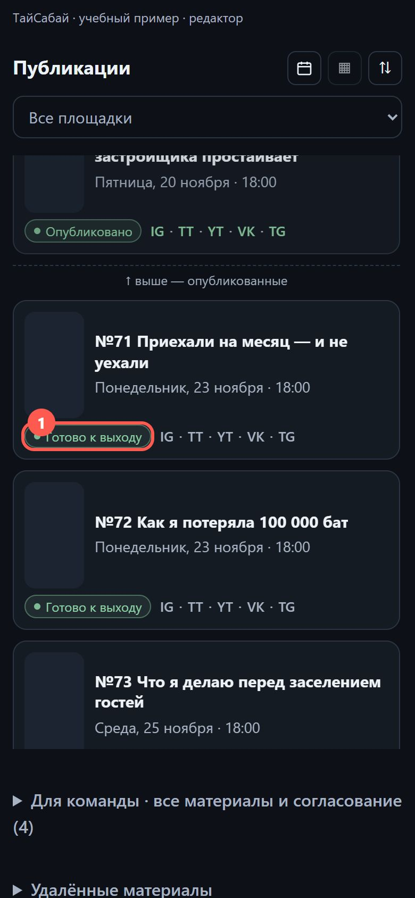
Вернитесь в редактор готовой карточки
Нажмите готовую карточку, затем «Открыть в редакторе». Снова увидите поля публикации и действия с её расписанием.
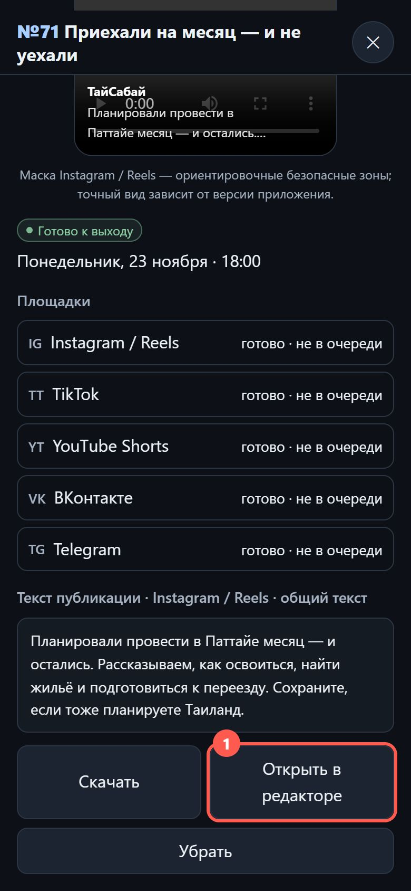
Выберите выпуск по расписанию
Откройте «Постинг» → «Настройки модуля» → «Подготовка и выпуск» и выберите «По расписанию». В этом режиме согласованные публикации можно отдельно ставить в план.
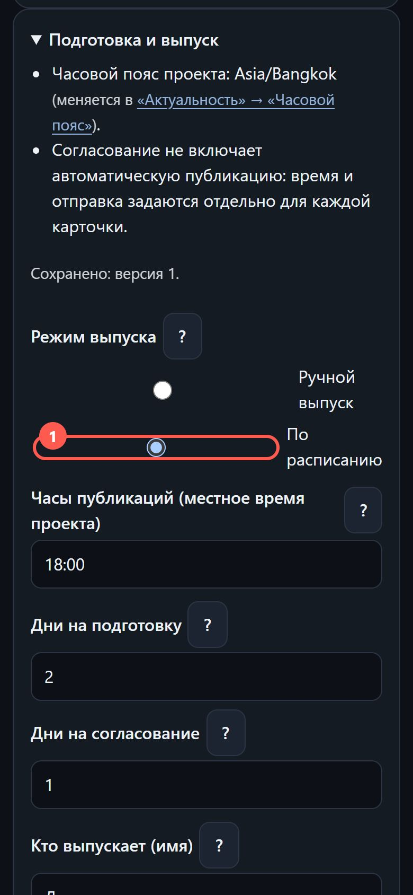
Сохраните настройки выпуска
Укажите желаемые часы публикаций, затем пролистайте блок до кнопки сохранения и нажмите её. Эти часы — общий ориентир: точное время каждого ролика задаётся в его карточке.
Поставьте публикацию в очередь
Вернитесь к согласованной карточке, проверьте её дату и время, откройте актуальный «Предпросмотр» и нажмите «Поставить в план». Появится подтверждение, что материал запланирован.
Сверьте очередь
Откройте список запланированных публикаций и найдите свой ролик. Проверьте день, время и площадки именно в его карточке.
Проверьте выход на площадки
Когда наступит назначенное время, кабинет начнёт отправку запланированного материала. Откройте карточку и проверьте результат и ссылку для каждой площадки: один успешный выход ещё не означает, что ролик вышел везде.
Добавьте вводные для следующих тем
В «Настройках модуля» раскройте «Уточнить план», добавьте частые вопросы покупателей и другие вводные, затем сохраните блок. Эти сведения не меняют назначенное время роликов в «Постинге».
Раздел 6
Статистика
Здесь смотрят результаты вышедших публикаций. Если раздел недоступен, попросите владельца проверить ваш доступ.
Откройте общую статистику
Откройте «Статистику»: на вкладке «Все» увидите общую сводку и список публикаций. Вкладки рядом позволяют выбрать отдельную площадку.
Посмотрите сводку площадок
Разверните «Площадки за период». Знак «—» означает, что данных пока нет, а не нулевой результат.
Выберите одну площадку
Нажмите вкладку нужной площадки, например IG для Instagram. Список публикаций и показатели будут относиться к ней.
Смените период
Нажмите значок календаря и выберите 7, 14, 30 или 90 дней. На экране появятся данные за выбранный промежуток.
Раздел 7
Если что-то не получается
Если проблема связана с роликом, используйте кнопку в «Монтаже»; вопросы по остальным разделам можно задать в общем чате компании.
Сообщите о проблеме с роликом
Нажмите «Сообщить о проблеме» в карточке ролика или вверху «Монтажа», опишите, что не работает, и нажмите «Отправить». Появится подтверждение «Отправлено, задача №…».

Напишите в общий чат компании
Откройте «Чаты» → «Общий чат компании» и напишите, на каком шаге вы остановились. Ваш вопрос увидит команда; здесь отвечает Claude.
Частые вопросы
- Случайно убрали нужную фразу?
- Нажмите «+» в её строке — фраза вернётся. До отправки можно сбросить пометки и пожелания кнопкой «Вернуть как было».
- Можно отправить только пожелание, не меняя фразы?
- Да. Добавьте хотя бы одно пожелание — кнопка «Отправить монтажёру» станет доступна.
- Не видите «Публикация и решение» и «Берём»?
- Они появляются у собранной версии монтажа. У исходного видео этого блока нет.
- «Отправить монтажёру» сразу публикует ролик?
- Нет. Эта кнопка передаёт правки монтажёру; выход на площадки — отдельное действие.
- В плане стоит дата — ролик точно выйдет в этот день?
- Для выхода по расписанию нужны подключённые площадки, согласованная публикация с точной датой и часом и действие «Поставить в план». Одна дата темы в контент-плане этого не заменяет.
- «Поставить в план» недоступно?
- Откройте «Предпросмотр» и прочитайте, чего не хватает. После изменения текста, видео или площадок сохраните карточку и заново проверьте согласование.
- Неясно, ушла ли публикация?
- Посмотрите результат отдельно для каждой площадки в карточке. Если есть кнопка «Проверить результат в сервисе», используйте её; при непонятном результате напишите в общий чат компании.
- Нет нужного раздела или кнопки?
- Напишите в общий чат компании, что хотели сделать и что видите. Подключения и согласования, помеченные «Делает владелец», выполняет владелец.